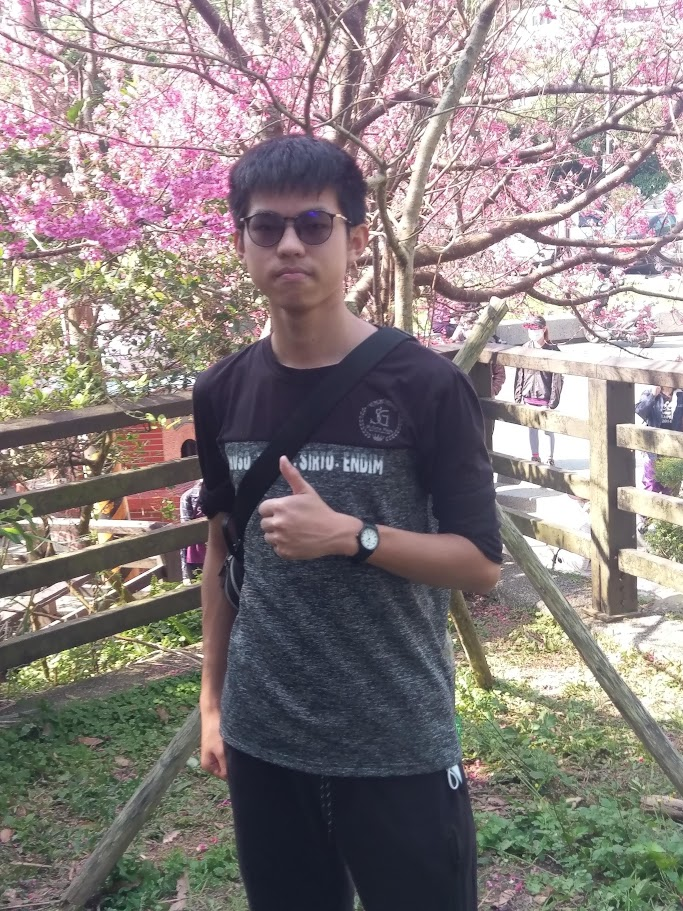
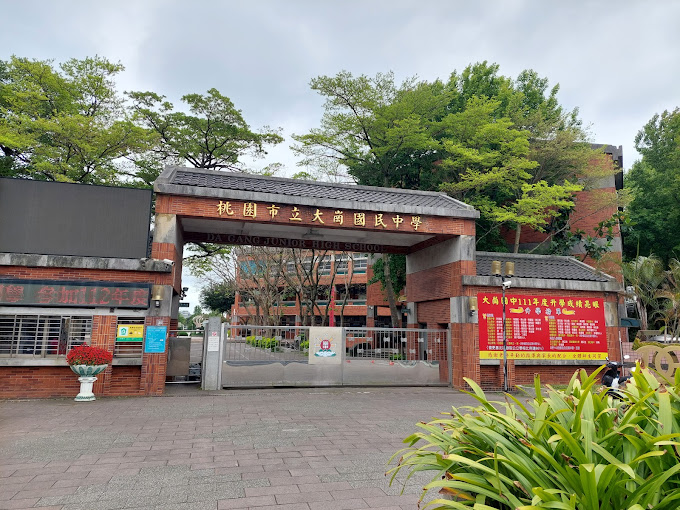
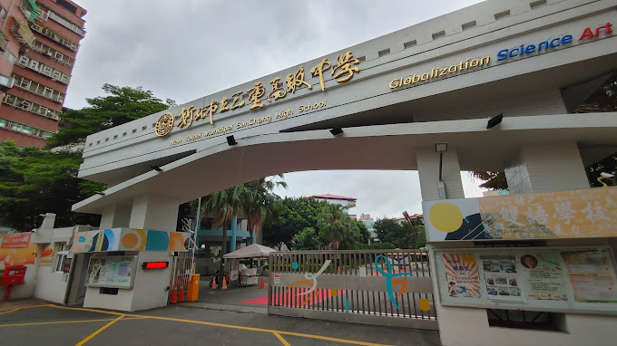
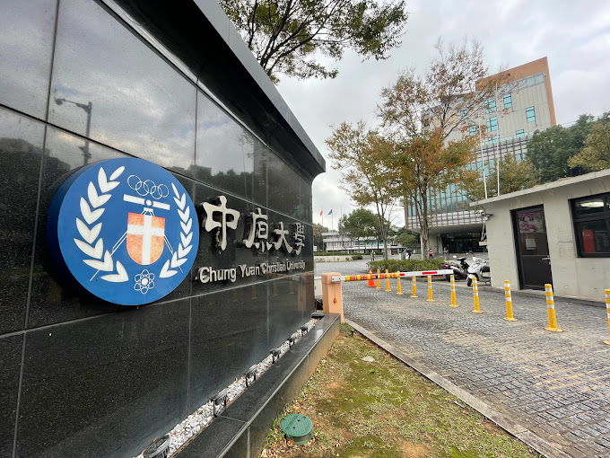
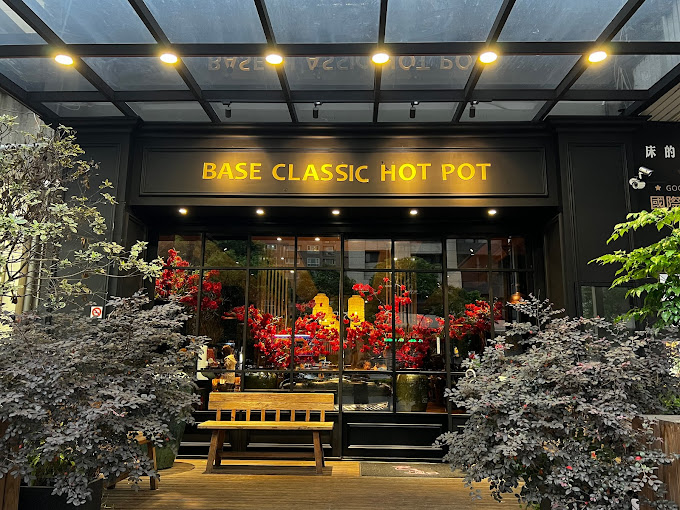
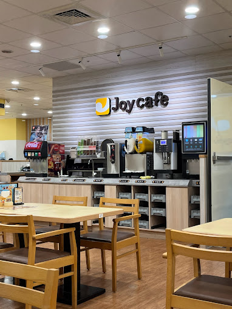
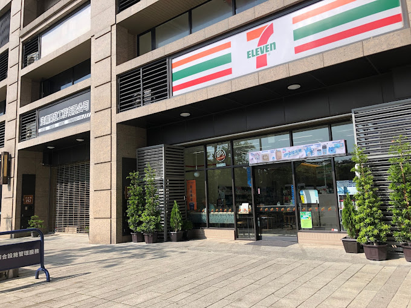

吳柏偉
Shrik
~~就算機率趨近於零，也不能當作不可能~~
關於我
學校--中原大學
科系--資管系
生日--2005/07/27
星座--獅子座
個人特質--樂觀、理性、寬容、富有想像力
興趣
音樂
- 8-bit、EDM、Citypop、Jpop
自行車
- 單次最高里程:100km
- 夢想是完成自行車環島
遊戲
- 節奏、解謎、生存、類魂
能力
python
java
HTML
word/ppt/excel
Photoshop
經歷
學習
大崗國中(2017~2020)
-
得到知心好友，在這裡找到最好的麻吉，無時無刻都在一
起，也很常一起出去玩。這時期也開始了我喜歡騎自行車的興趣。

三重高中(2020~2023)
-
課業最繁重，要拚學測、做學習檔案，一切都是為了之後好升學。不過，
壓力因為這時朋友最多反而減低了不少，大家可以一起互相幫忙。

中原大學(2023~現在)
-
最恍惚，很多時候都不知道要做甚麼，因為一下子都空了很多時間。大家
都投入到自己的興趣上，沒人會找上你，所以要好好想想自己要做甚麼。

工作
巴適經典麻辣鍋-內場
-
吃到飽店，每天都人滿為患菜都隨時要及時切隨時及時上
，在這種急躁環境下學會了穩住不慌。

Joyfull-內場
-
日本家庭料理店，或許是日本公司的原因規矩十分多，每
件事都要把關，堅持好的用餐品質。也讓我知道能維持好
對外的表現是很重要的。

7-11店員
-
便利商店甚麼都學都做，但卻也是最單調的工作。真正的
挑戰是面對客人，這件事鍛鍊了心智理智，讓我可以很好
應付特殊的人。

聯絡資訊